Captura 1 de 32 — Región Norte de Virginia
Virginia
Región Norte de Virginia, us-east-1, utilizada para las dos primeras instancias.
CAPTURA DOCUMENTADA
La imagen se carga desde media/ al guardar los archivos juntos.
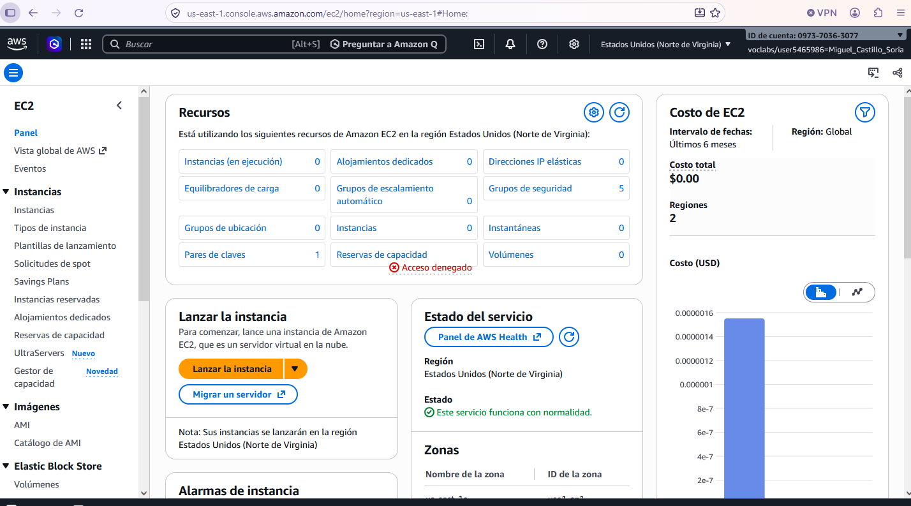
Memoria de despliegue en dos regiones, publicación PHP, monitorización y automatización.
Ubuntu en us-east-1a, Amazon Linux en us-east-1d y un servidor PHP en us-west-2b. Una instancia adicional se despliega desde CloudShell mediante AWS CLI.
| Instancia | Región / zona | IP pública de la sesión |
|---|---|---|
| MCS-U4-Ubuntu | us-east-1 / us-east-1a | 100.61.126.130 |
| MCS-U4-AmazonLinux | us-east-1 / us-east-1d | Consultar captura del resumen |
| MCS-U4-PHP | us-west-2 / us-west-2b | 16.145.93.84 |
| MCS-U4-CLI | us-west-2 | Consultar resultado CLI y consola |
Las direcciones corresponden a esta sesión y dejan de servir tras terminar las instancias. No se inventan identificadores ni valores de métricas que no constan en el texto de la sesión.
Virginia
Región Norte de Virginia, us-east-1, utilizada para las dos primeras instancias.
La imagen se carga desde media/ al guardar los archivos juntos.

Virginia
Instancia MCS-U4-Ubuntu con Ubuntu y tipo t3.micro.
La imagen se carga desde media/ al guardar los archivos juntos.
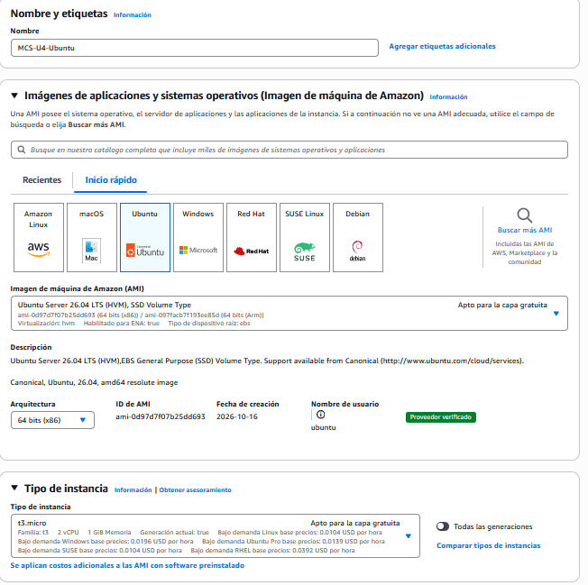
Virginia
Subred subnet-044c0e3591b4dcb6d en us-east-1a, IP pública habilitada y grupo MCS-U4-Ubuntu-SG con SSH desde Mi IP.
La imagen se carga desde media/ al guardar los archivos juntos.
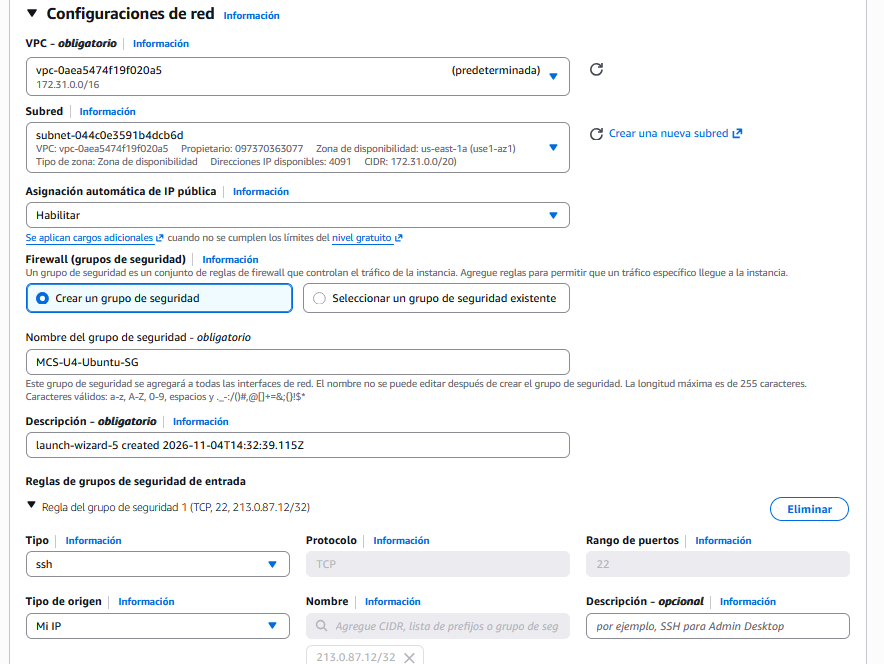
Virginia
Configuración del disco de 8 GiB y revisión de los parámetros de lanzamiento.
La imagen se carga desde media/ al guardar los archivos juntos.
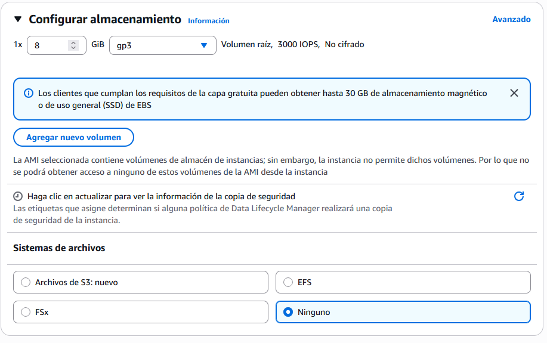
Virginia
Instancia Ubuntu i-09bc5fcea0cd1b1b6. IP pública de esta sesión: 100.61.126.130; privada: 172.31.11.197; zona: us-east-1a.
La imagen se carga desde media/ al guardar los archivos juntos.
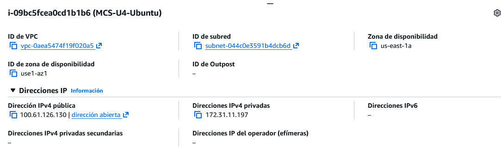
Virginia
Localización de la clave labsuser(1).pem en Downloads de Windows. No se muestra el contenido privado.
La imagen se carga desde media/ al guardar los archivos juntos.
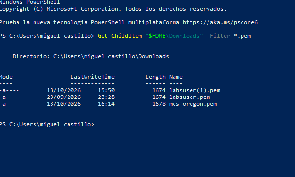
Virginia
Conexión SSH desde PowerShell con el usuario ubuntu a 100.61.126.130 y la clave PEM de Academy.
La imagen se carga desde media/ al guardar los archivos juntos.
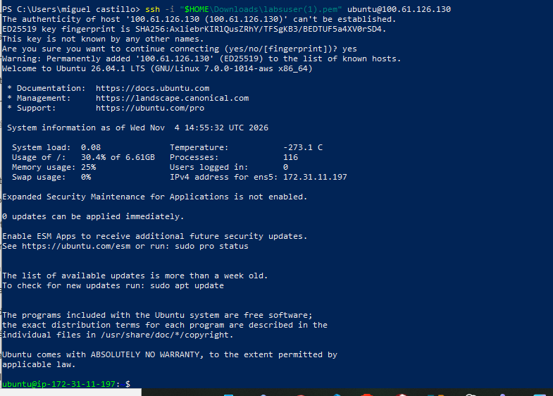
Segunda zona
Segunda instancia MCS-U4-AmazonLinux con Amazon Linux y tipo t3.micro en Virginia.
La imagen se carga desde media/ al guardar los archivos juntos.
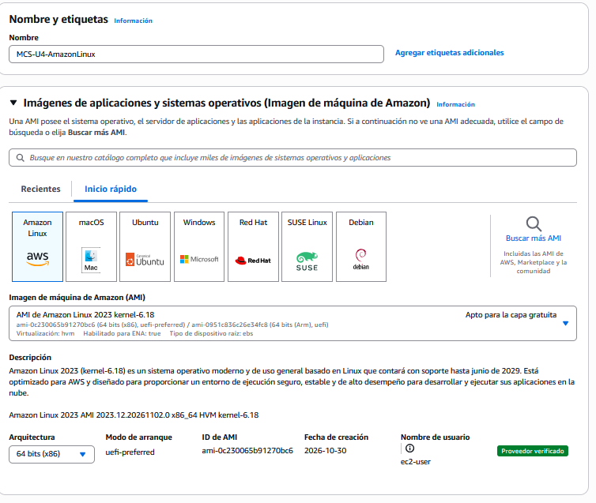
Segunda zona
Selección de la subred subnet-03d6e587b3c00cdc2 en us-east-1d, distinta de us-east-1a, reutilizando la regla SSH del grupo existente.
La imagen se carga desde media/ al guardar los archivos juntos.
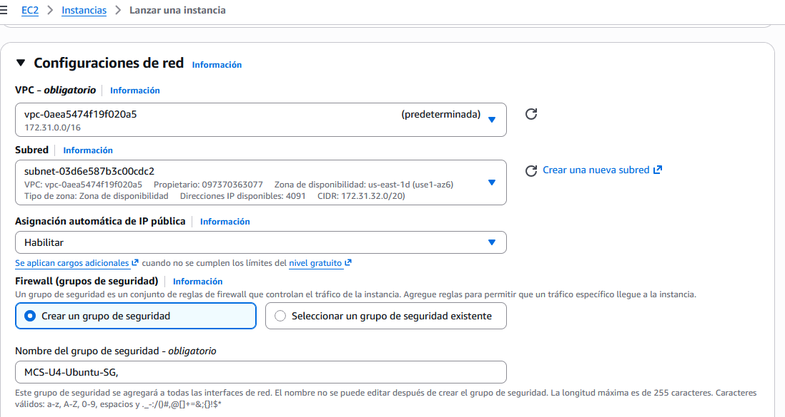
Segunda zona
Almacenamiento de 8 GiB y revisión de la segunda instancia antes del lanzamiento.
La imagen se carga desde media/ al guardar los archivos juntos.
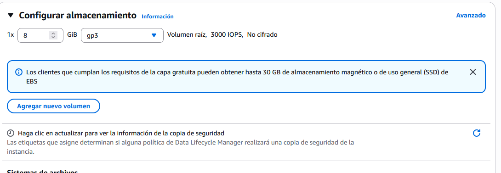
Segunda zona
Resumen de MCS-U4-AmazonLinux y comprobación de la zona us-east-1d.
La imagen se carga desde media/ al guardar los archivos juntos.
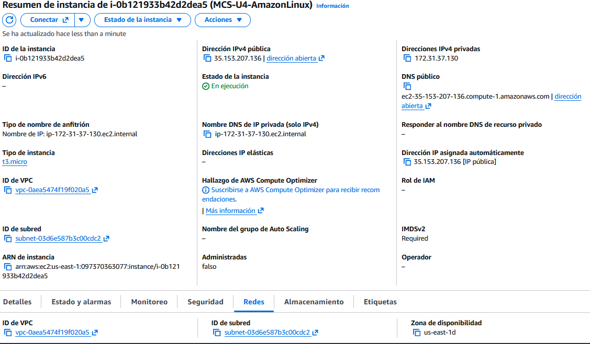
Oregón PHP
Cambio a Oregón, us-west-2, para desplegar el servidor PHP.
La imagen se carga desde media/ al guardar los archivos juntos.
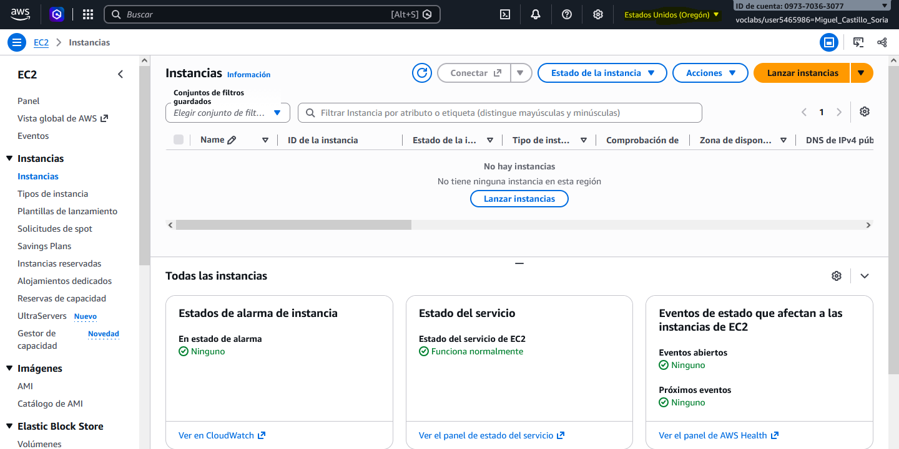
Oregón PHP
Instancia MCS-U4-PHP con Amazon Linux 2023 y tipo t3.micro.
La imagen se carga desde media/ al guardar los archivos juntos.
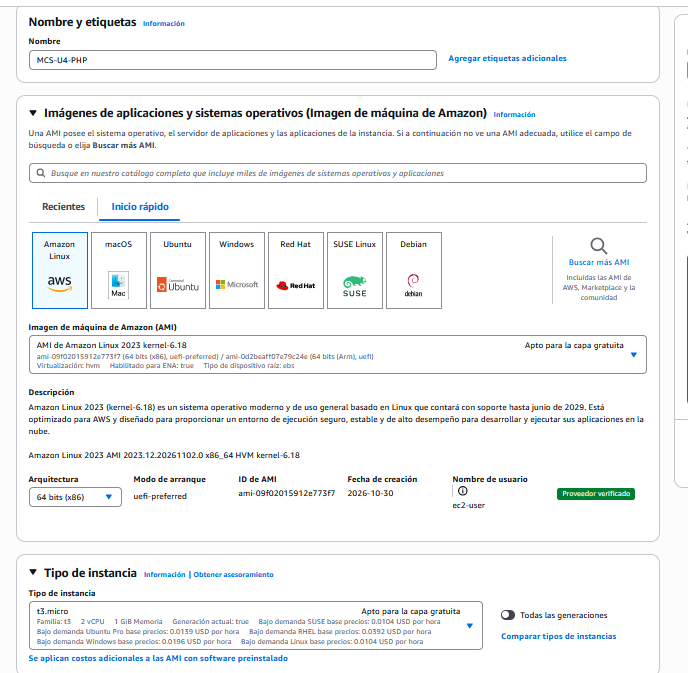
Oregón PHP
Creación de un nuevo par RSA llamado mcs-u4-oregon y descarga de su PEM, como solicita el enunciado.
La imagen se carga desde media/ al guardar los archivos juntos.
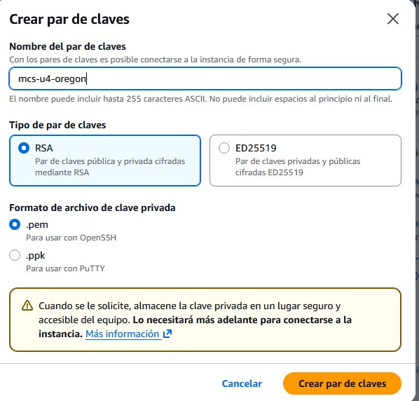
Oregón PHP
Subred de Oregón, IP pública habilitada, grupo MCS-U4-PHP-SG y disco de 8 GiB.
La imagen se carga desde media/ al guardar los archivos juntos.
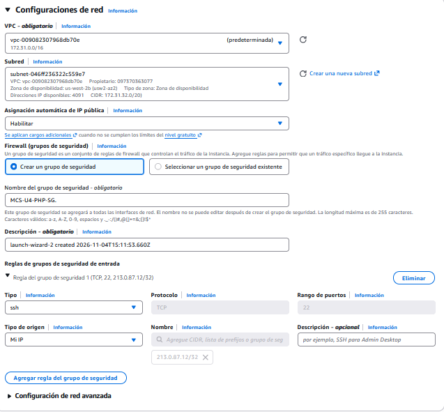
Oregón PHP
Reglas de entrada: SSH TCP 22 desde Mi IP y HTTP TCP 80 desde 0.0.0.0/0 para publicar la web.
La imagen se carga desde media/ al guardar los archivos juntos.
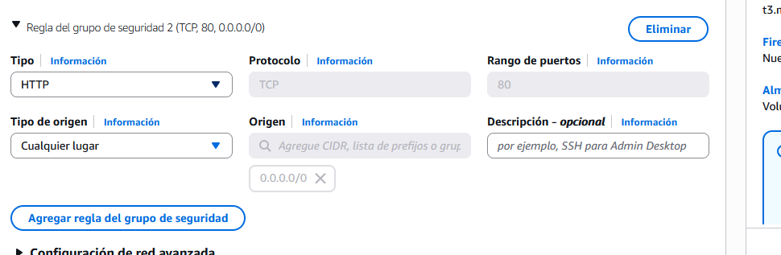
Oregón PHP
Instancia i-06be1d5d68f86f7cf en us-west-2b. IP pública de esta sesión: 16.145.93.84; privada: 172.31.46.207.
La imagen se carga desde media/ al guardar los archivos juntos.
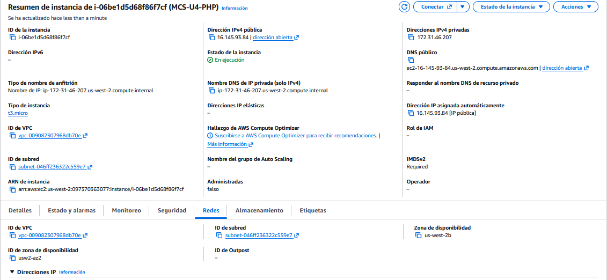
Oregón PHP
Conexión SSH con ec2-user y mcs-u4-oregon.pem. Se corrigieron los permisos locales del PEM para que OpenSSH aceptara la clave.
La imagen se carga desde media/ al guardar los archivos juntos.
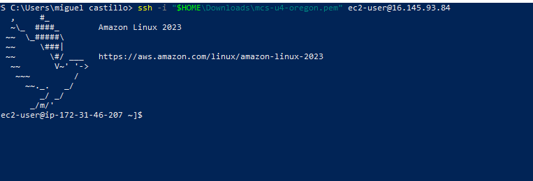
Oregón PHP
Instalación de Apache y PHP mediante dnf y activación de php-fpm y httpd. La comprobación mostró ambos servicios active y PHP 8.5.12.
La imagen se carga desde media/ al guardar los archivos juntos.
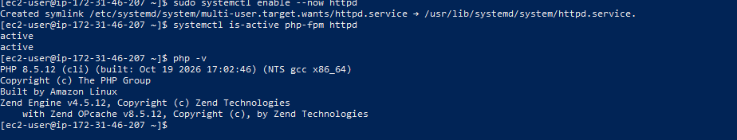
Oregón PHP
Creación de index.php en Downloads de Windows con comillas rectas y codificación ASCII. Contenido: <?php echo "Hola mundo"; ?>.
La imagen se carga desde media/ al guardar los archivos juntos.
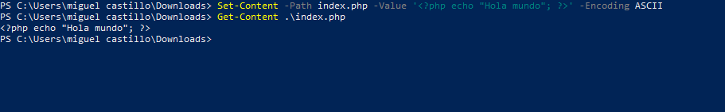
Oregón PHP
Transferencia SCP desde PowerShell local al directorio /home/ec2-user/ del servidor en Oregón.
La imagen se carga desde media/ al guardar los archivos juntos.
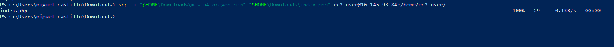
Oregón PHP
Movimiento del archivo a /var/www/html/, comprobación de su ubicación y petición local de prueba con curl.
La imagen se carga desde media/ al guardar los archivos juntos.
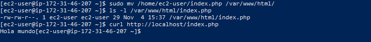
Oregón PHP
Comprobación de la página PHP desde el navegador mediante http://16.145.93.84. El contenido de la página es Hola mundo.
La imagen se carga desde media/ al guardar los archivos juntos.
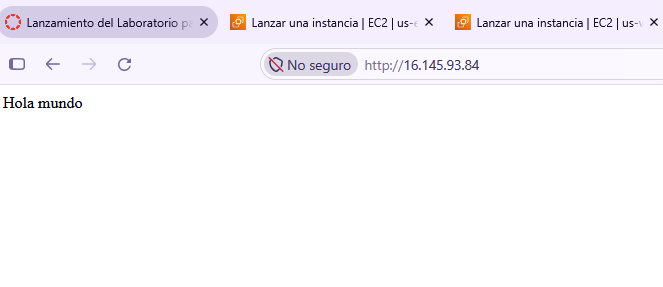
Monitorización
Vista general de las gráficas de la pestaña Monitoreo de la instancia PHP.
La imagen se carga desde media/ al guardar los archivos juntos.
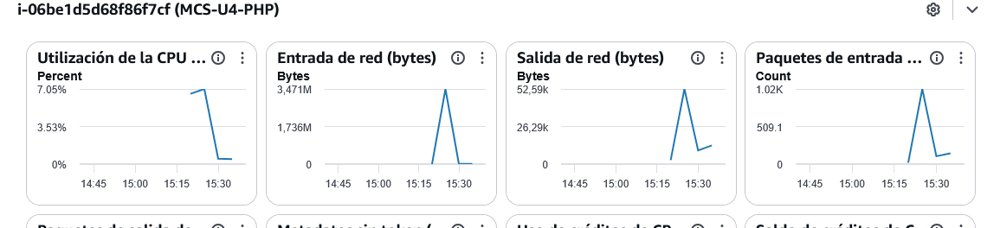
Monitorización
Gráfica ampliada de utilización de CPU, con intervalo de última hora y periodo de cinco minutos. Los valores concretos se consultan en la evidencia.
La imagen se carga desde media/ al guardar los archivos juntos.
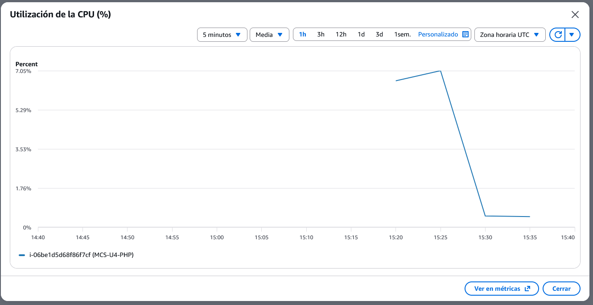
Monitorización
Visitas y recargas de la página PHP para generar tráfico de respuesta desde el servidor.
La imagen se carga desde media/ al guardar los archivos juntos.
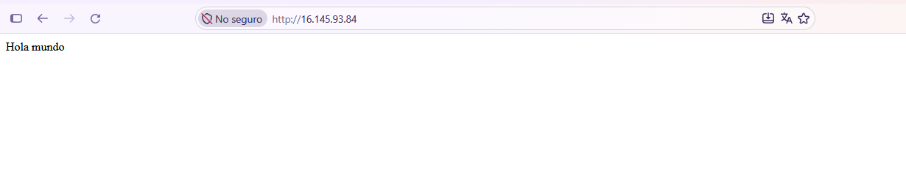
Monitorización
Gráfica ampliada de tráfico de salida NetworkOut después de las visitas. El efecto puede ser pequeño y las métricas se publican con retraso; la evidencia recoge los valores reales.
La imagen se carga desde media/ al guardar los archivos juntos.
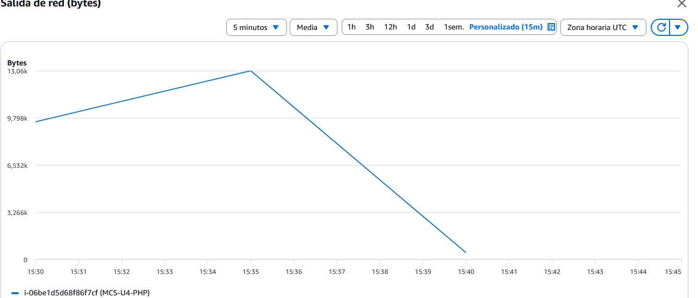
AWS CLI
Contenido del archivo despliegue-u4.sh. Se obtienen AMI, subred, grupo, clave y dispositivo raíz de MCS-U4-PHP y se prepara una nueva instancia con nombre MCS-U4-CLI.
La imagen se carga desde media/ al guardar los archivos juntos.
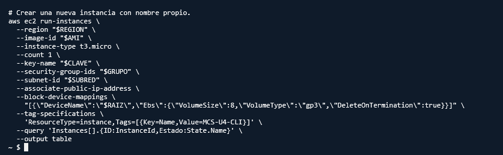
AWS CLI
Ejecución de bash despliegue-u4.sh y tabla de resultado con el identificador y el estado inicial de la instancia.
La imagen se carga desde media/ al guardar los archivos juntos.
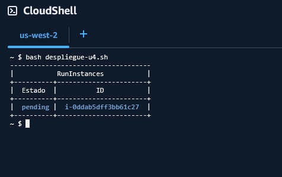
AWS CLI
Listado de instancias de Oregón con MCS-U4-CLI, su identificador, estado y tipo t3.micro.
La imagen se carga desde media/ al guardar los archivos juntos.
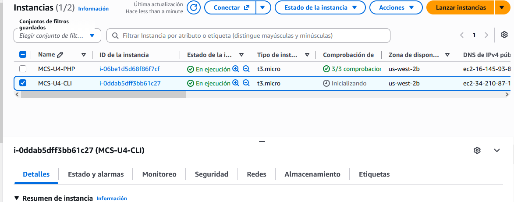
Cierre
Terminación de MCS-U4-PHP y MCS-U4-CLI en Oregón, y de MCS-U4-Ubuntu y MCS-U4-AmazonLinux en Virginia. Se conservan evidencias separadas de ambas regiones.
La imagen se carga desde media/ al guardar los archivos juntos.
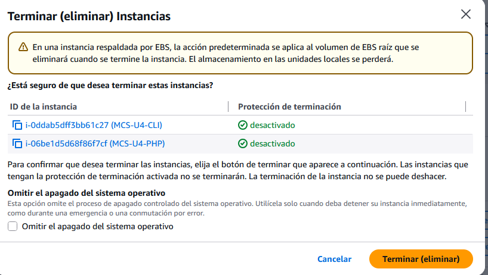
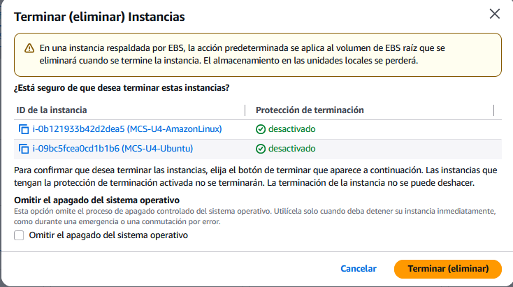
Cierre
Finalización del laboratorio en AWS Academy después de guardar las evidencias y terminar las instancias.
La imagen se carga desde media/ al guardar los archivos juntos.
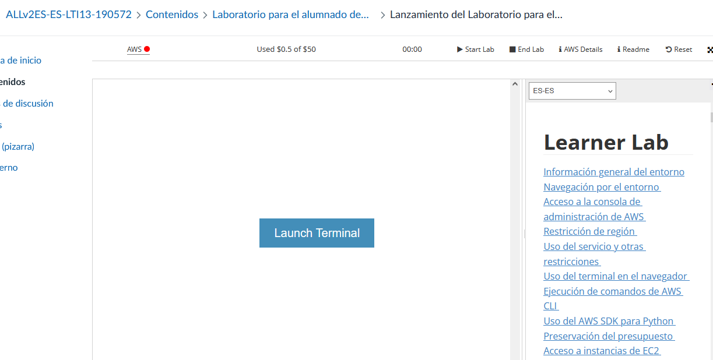
sudo dnf install -y httpd php-fpm php sudo systemctl enable --now php-fpm sudo systemctl enable --now httpd
<?php echo "Hola mundo"; ?>
scp -i CLAVE.pem index.php ec2-user@IP_PUBLICA:/home/ec2-user/
sudo mv index.php /var/www/html/
CLAVE.pem e IP_PUBLICA son marcadores; se sustituirán por los datos reales y las rutas correctas. Abrir después http://IP_PUBLICA.
CloudShell se utilizó en Oregón con las credenciales de la sesión. El script obtiene la configuración del servidor PHP y crea una nueva instancia con nombre propio.
#!/bin/bash
set -euo pipefail
REGION="us-west-2"
read -r AMI SUBRED GRUPO CLAVE RAIZ < <(
aws ec2 describe-instances \
--region "$REGION" \
--filters "Name=tag:Name,Values=MCS-U4-PHP" \
"Name=instance-state-name,Values=running" \
--query 'Reservations[].Instances[].[ImageId,SubnetId,SecurityGroups[0].GroupId,KeyName,RootDeviceName]' \
--output text
)
aws ec2 run-instances \
--region "$REGION" \
--image-id "$AMI" \
--instance-type t3.micro \
--count 1 \
--key-name "$CLAVE" \
--security-group-ids "$GRUPO" \
--subnet-id "$SUBRED" \
--associate-public-ip-address \
--block-device-mappings \
"[{\"DeviceName\":\"$RAIZ\",\"Ebs\":{\"VolumeSize\":8,\"VolumeType\":\"gp3\",\"DeleteOnTermination\":true}}]" \
--tag-specifications \
'ResourceType=instance,Tags=[{Key=Name,Value=MCS-U4-CLI}]' \
--query 'Instances[].{ID:InstanceId,Estado:State.Name}' \
--output table| Parámetro o instrucción | Función |
|---|---|
| set -euo pipefail | Detiene el script ante errores, variables sin definir o fallos en tuberías. |
| read / describe-instances / --filters | Obtiene los datos de la instancia MCS-U4-PHP que está en ejecución. |
| --region | Selecciona us-west-2 (Oregón). |
| --image-id | Selecciona la AMI obtenida del servidor PHP. |
| --instance-type / --count | Crea una instancia t3.micro. |
| --key-name | Asocia el par mcs-u4-oregon, sin incluir su clave privada. |
| --security-group-ids / --subnet-id | Reutiliza el grupo y la subred del servidor PHP de esta práctica. |
| --associate-public-ip-address | Solicita IP pública para la nueva instancia. |
| --block-device-mappings | Define el disco raíz gp3 de 8 GiB y su eliminación al terminar la instancia. |
| --tag-specifications | Asigna la etiqueta Name=MCS-U4-CLI. |
| --query / --output | Selecciona campos de respuesta y los presenta como texto o tabla. |
AMI de esta sesión: ami-09f02015912e773f7; subred: subnet-046ff236322c559e7; grupo: sg-0e9683fbc23437c70. Son datos de este laboratorio, no una configuración reutilizable tras su eliminación.
Se ha recorrido el despliegue en dos zonas de Virginia, la publicación de una web PHP en Oregón, la consulta de CPU y NetworkOut, y la creación de una instancia mediante AWS CLI. El cierre incluye terminar las cuatro instancias y finalizar el laboratorio.
Las métricas concretas y los estados finales se documentan en las capturas. La evidencia 31 tiene dos imágenes, una por región.
Volver a Nube